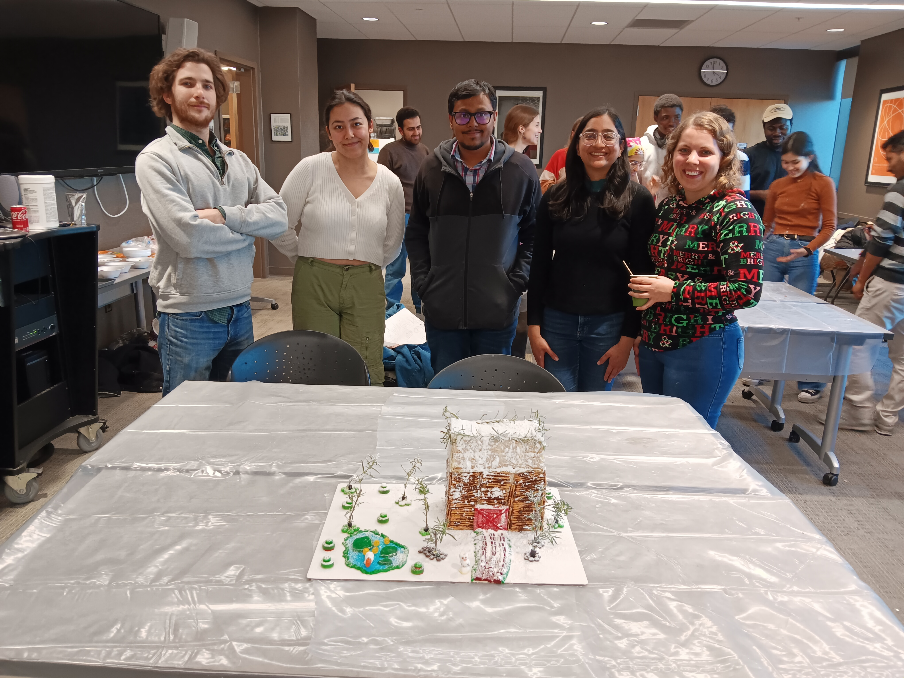
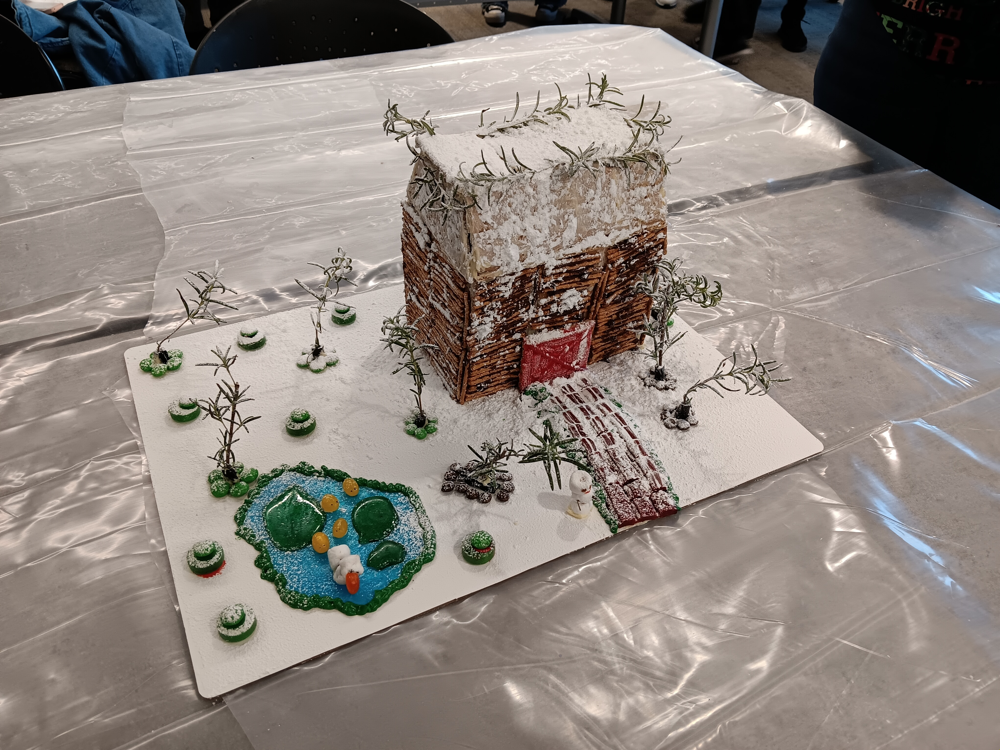

News and Updates
CIGP Fellowship for Dorothea Illner
Congratulations to Dorothea for being awarded a 2025 Computational Interdisciplinary Graduate Program Fellowship!
Jacob Wat's Thesis Defense
Jacob Wat successfully defended his PhD thesis on December 14, 2024. Congratulations, Dr. Wat!
Safa Ahad's Thesis Defense
Congratulations to Safa Ahad, our first PhD graduate from the group!
Gingerbread House Competition
Our expert team of architects (headed up by Sarah Alvarez) won first prize in the PChem ginger-bread house competition. Go team!
The team:

The creation:
